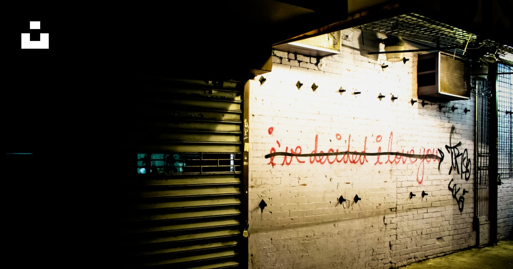

<?xml version="1.0" encoding="UTF-8"?><rss xmlns:dc="http://purl.org/dc/elements/1.1/" xmlns:content="http://purl.org/rss/1.0/modules/content/" xmlns:atom="http://www.w3.org/2005/Atom" version="2.0" xmlns:media="http://search.yahoo.com/mrss/"><channel><title><![CDATA[Mekuria // Getinet]]></title><description><![CDATA[I am a UX/UI & Visual designer with experience leading design and front-end development teams. I have expertise in designing and developing the user experience for web-based applications, complex webs]]></description><link>../</link><image><url>../favicon.png</url><title>Mekuria // Getinet</title><link>../</link></image><generator>Ghost 5.109</generator><lastBuildDate>Tue, 25 Feb 2025 03:07:02 GMT</lastBuildDate><atom:link href="../rss/" rel="self" type="application/rss+xml"/><ttl>60</ttl><item><title><![CDATA[Girl Talk]]></title><description><![CDATA[<figure class="kg-card kg-image-card kg-width-wide"></figure><figure class="kg-card kg-gallery-card kg-width-wide"><div class="kg-gallery-container"><div class="kg-gallery-row"><div class="kg-gallery-image"></div><div class="kg-gallery-image"></div><div class="kg-gallery-image"></div></div></div></figure><figure class="kg-card kg-gallery-card kg-width-wide"><div class="kg-gallery-container"><div class="kg-gallery-row"><div class="kg-gallery-image"></div></div></div></figure><figure class="kg-card kg-gallery-card kg-width-wide"><div class="kg-gallery-container"><div class="kg-gallery-row"><div class="kg-gallery-image"></div><div class="kg-gallery-image"></div></div></div></figure><figure class="kg-card kg-gallery-card kg-width-wide"><div class="kg-gallery-container"><div class="kg-gallery-row"><div class="kg-gallery-image"></div><div class="kg-gallery-image"></div></div></div></figure><figure class="kg-card kg-gallery-card kg-width-wide"><div class="kg-gallery-container"><div class="kg-gallery-row"><div class="kg-gallery-image"></div><div class="kg-gallery-image"></div><div class="kg-gallery-image"></div></div><div class="kg-gallery-row"><div class="kg-gallery-image"></div><div class="kg-gallery-image"></div></div></div></figure>]]></description><link>../girl-talk/</link><guid isPermaLink="false">67bd2ed01f8d304d9e59ed78</guid><category><![CDATA[Photography]]></category><dc:creator><![CDATA[Mekuria Getinet]]></dc:creator><pubDate>Tue, 25 Feb 2025 03:00:02 GMT</pubDate><media:content url="../content/images/2025/02/20081028-192644-c156a9a4dca0cfdf.webp" medium="image"/><content:encoded><![CDATA[<figure class="kg-card kg-image-card kg-width-wide"></figure><figure class="kg-card kg-gallery-card kg-width-wide"><div class="kg-gallery-container"><div class="kg-gallery-row"><div class="kg-gallery-image"></div><div class="kg-gallery-image"></div><div class="kg-gallery-image"></div></div></div></figure><figure class="kg-card kg-gallery-card kg-width-wide"><div class="kg-gallery-container"><div class="kg-gallery-row"><div class="kg-gallery-image"></div></div></div></figure><figure class="kg-card kg-gallery-card kg-width-wide"><div class="kg-gallery-container"><div class="kg-gallery-row"><div class="kg-gallery-image"></div><div class="kg-gallery-image"></div></div></div></figure><figure class="kg-card kg-gallery-card kg-width-wide"><div class="kg-gallery-container"><div class="kg-gallery-row"><div class="kg-gallery-image"></div><div class="kg-gallery-image"></div></div></div></figure><figure class="kg-card kg-gallery-card kg-width-wide"><div class="kg-gallery-container"><div class="kg-gallery-row"><div class="kg-gallery-image"></div><div class="kg-gallery-image"></div><div class="kg-gallery-image"></div></div><div class="kg-gallery-row"><div class="kg-gallery-image"></div><div class="kg-gallery-image"></div></div></div></figure>]]></content:encoded></item><item><title><![CDATA[Samsung Statement of Qualifications]]></title><description><![CDATA[Samsung International Hospital & Advanced Biotechnology  Research Center]]></description><link>../samsung/</link><guid isPermaLink="false">67b2e906020e811118f536bf</guid><category><![CDATA[Graphic Design]]></category><category><![CDATA[Print Design]]></category><category><![CDATA[Art Direction]]></category><dc:creator><![CDATA[Mekuria Getinet]]></dc:creator><pubDate>Sat, 22 Feb 2025 22:49:04 GMT</pubDate><media:content url="../content/images/2025/02/cover-2e6e984cae2dfa29.png" medium="image"/><content:encoded><![CDATA[<p>Client: <strong>KMD Architects</strong></p><p>Statement of Qualifications<br>Samsung International Hospital&#xA0;<br>Samsung Advanced Biotechnology&#xA0; Research Center</p><p>As the <strong>Art Director and Graphic Designer</strong> for this Statement of Qualifications (SOQ) submission, I was responsible for crafting a visual language that seamlessly aligned with both KMD Architects&#x2019; design philosophy and Samsung&#x2019;s vision for advanced medical research.</p><figure class="kg-card kg-image-card"></figure><p>This SOQ was more than just a presentation of credentials&#x2014;it was an opportunity to create a tactile and emotional experience that resonated with the client. The cover and section dividers were designed to reflect the precision and innovation inherent in both architecture and biotechnology while maintaining a human-centric approach.</p><figure class="kg-card kg-image-card"></figure><h4 id="creative-process-design-analysis"><strong>Creative Process &amp; Design Analysis</strong></h4><ul><li><strong>Circle Masks &amp; Emotional Impact</strong>: A defining element of the design is the strategic use of circular masks. These shapes do more than provide visual structure&#x2014;they evoke a sense of discovery, focus, and connection. The circular forms reference cellular structures, the microscopic world of biotechnology, and the holistic nature of patient-centered care. They also introduce a rhythm throughout the document, guiding the viewer&#x2019;s eye and creating a sense of flow and continuity.</li><li><strong>Concept-Driven Aesthetic</strong>: Inspired by the intersection of science and architecture, the design integrates organic and geometric elements. The perforated overlay effect on the cover adds depth, subtly reinforcing the idea of layers&#x2014;whether in research, medical advancements, or architectural design.</li><li><strong>Architectural Photography Integration</strong>: Instead of traditional rectangular layouts, images are revealed through circular frames, making each moment feel curated and intentional. This technique highlights transparency, structural rhythm, and spatial composition, mirroring the architectural experience.</li><li><strong>Typography &amp; Branding</strong>: A restrained, modern typographic approach keeps the focus on the imagery while maintaining a sense of refinement. The color palette&#x2014;soft whites, deep blues, and warm neutrals&#x2014;balances clinical precision with a sense of warmth and human connection.</li><li><strong>Material &amp; Print Considerations</strong>: The final print execution emphasized texture and contrast, ensuring that the design not only looked sophisticated but also felt premium in hand. The interplay of gloss and matte finishes enhanced the depth of the masked elements, making the design feel tactile and dimensional.</li></ul><figure class="kg-card kg-image-card"></figure><p>This project was an exercise in using design to communicate more than just information&#x2014;it was about evoking emotion, curiosity, and a sense of trust. By merging architecture, biotechnology, and thoughtful graphic design, this SOQ became a compelling visual narrative that positioned KMD Architects as the ideal partner for Samsung&#x2019;s vision.</p>]]></content:encoded></item><item><title><![CDATA[virgin america proposal]]></title><description><![CDATA[<figure class="kg-card kg-gallery-card kg-width-wide"><div class="kg-gallery-container"><div class="kg-gallery-row"><div class="kg-gallery-image"></div></div></div></figure><h3 id="research-inspiration"><strong>Research &amp; Inspiration</strong></h3><p>This proposal design was crafted to reflect the sleek, modern, and customer-focused brand identity of Virgin America. Inspired by the airline&#x2019;s bold aesthetics, in-flight experience, and commitment to innovation, the design needed to feel sophisticated yet approachable. Key influences included Virgin&#x2019;s signature red</p>]]></description><link>../virgin-america/</link><guid isPermaLink="false">679fe4f6bdc21cc8ff74c69d</guid><category><![CDATA[Graphic Design]]></category><category><![CDATA[Illustrations]]></category><category><![CDATA[Print Design]]></category><dc:creator><![CDATA[Mekuria Getinet]]></dc:creator><pubDate>Wed, 19 Feb 2025 04:21:00 GMT</pubDate><media:content url="../content/images/2025/02/cover-2.png" medium="image"/><content:encoded><![CDATA[<figure class="kg-card kg-gallery-card kg-width-wide"><div class="kg-gallery-container"><div class="kg-gallery-row"><div class="kg-gallery-image"></div></div></div></figure><h3 id="research-inspiration"><strong>Research &amp; Inspiration</strong></h3><p>This proposal design was crafted to reflect the sleek, modern, and customer-focused brand identity of Virgin America. Inspired by the airline&#x2019;s bold aesthetics, in-flight experience, and commitment to innovation, the design needed to feel sophisticated yet approachable. Key influences included Virgin&#x2019;s signature red and white color scheme, minimalist typography, and a sense of movement that aligns with the concept of air travel.</p><h3 id="concept-development"><strong>Concept Development</strong></h3><p>I aimed to create a layout that was both visually striking and highly functional. The design balances strong imagery with structured content, ensuring clarity and impact. The use of dynamic angles and gradients suggests motion, echoing the speed and fluidity of air travel.</p><figure class="kg-card kg-image-card"></figure><h3 id="typography-composition"><strong>Typography &amp; Composition</strong></h3><p>A clean, modern typeface was chosen to maintain a professional yet stylish look. Hierarchy was carefully considered to guide the reader through the proposal effortlessly, with bold headlines and well-spaced body text. The layout was designed to keep the information engaging while maintaining a premium, polished feel.</p><h3 id="color-visual-elements"><strong>Color &amp; Visual Elements</strong></h3><p>The signature Virgin America red was used strategically to highlight key areas, reinforcing brand recognition and visual appeal. High-quality imagery and subtle gradients were incorporated to create depth and sophistication, while white space was utilized to maintain a refined and uncluttered aesthetic.</p><h3 id="iteration-finalization"><strong>Iteration &amp; Finalization</strong></h3><p>Through multiple refinements, I fine-tuned the balance between content and design, ensuring that the proposal remained both visually compelling and easy to read. Adjustments were made to typography, spacing, and contrast to enhance readability and overall presentation.</p><h3 id="production-delivery"><strong>Production &amp; Delivery</strong></h3><p>The final design was prepared for high-quality print production, ensuring crisp visuals, sharp typography, and accurate color reproduction. The end result is a proposal that not only presents information effectively but also aligns seamlessly with Virgin America&#x2019;s premium brand identity&#x2014;elevating the proposal from a document to a compelling visual experience.</p>]]></content:encoded></item><item><title><![CDATA[Imperial College London Diabetes Centre Proposal]]></title><description><![CDATA[<p><strong>Client:</strong> Mubadala<br><strong>Role:</strong> Art Director &amp; Graphic Designer<br><strong>Firm:</strong> KMD Architects</p><figure class="kg-card kg-image-card kg-width-full"></figure><h4 id="overview"><strong>Overview</strong></h4><p>KMD Architects was invited to submit a proposal for the <strong>Imperial College London Diabetes Centre (ICLDC)</strong>, seeking to become the <strong>Lead Design Consultant</strong> for its expansion. As the <strong>Art Director and Graphic Designer</strong>, I led the design of</p>]]></description><link>../mubadala/</link><guid isPermaLink="false">679fe4f6bdc21cc8ff74c69c</guid><category><![CDATA[Graphic Design]]></category><category><![CDATA[Print Design]]></category><category><![CDATA[Art Direction]]></category><dc:creator><![CDATA[Mekuria Getinet]]></dc:creator><pubDate>Wed, 19 Feb 2025 04:19:00 GMT</pubDate><media:content url="../content/images/2025/02/Mubadala_cover.jpg" medium="image"/><content:encoded><![CDATA[<p><strong>Client:</strong> Mubadala<br><strong>Role:</strong> Art Director &amp; Graphic Designer<br><strong>Firm:</strong> KMD Architects</p><figure class="kg-card kg-image-card kg-width-full"></figure><h4 id="overview"><strong>Overview</strong></h4><p>KMD Architects was invited to submit a proposal for the <strong>Imperial College London Diabetes Centre (ICLDC)</strong>, seeking to become the <strong>Lead Design Consultant</strong> for its expansion. As the <strong>Art Director and Graphic Designer</strong>, I led the design of the proposal package, ensuring it visually reinforced KMD&#x2019;s expertise and commitment to innovation in healthcare architecture.</p><figure class="kg-card kg-image-card kg-width-full"></figure><h4 id="design-approach"><strong>Design Approach</strong></h4><p>The proposal needed to <strong>exude professionalism, clarity, and sophistication</strong> while maintaining a structured hierarchy for easy navigation. The design was driven by:</p><ul><li><strong>Visual Cohesion:</strong> A <strong>modern and structured layout</strong> that reflected the precision and expertise of KMD Architects.</li><li><strong>Color Palette &amp; Materiality:</strong> A <strong>deep burgundy, muted teal, and earth tones</strong> created a sense of trust, stability, and refinement.</li><li><strong>Typography &amp; Hierarchy:</strong> Bold, sans-serif headings ensured readability, with careful <strong>section differentiation</strong> to enhance clarity.</li><li><strong>Subtle Graphics &amp; Mapping Elements:</strong> A <strong>soft grid and topographic elements</strong> subtly referenced architectural precision and global impact.</li></ul><h4 id="final-deliverables"><strong>Final Deliverables</strong></h4><p>The submission consisted of multiple <strong>volumes</strong>&#x2014;from eligibility and qualifications to financials&#x2014;each designed with a unified aesthetic, reflecting KMD&#x2019;s <strong>attention to detail and strategic storytelling</strong> in architectural proposals. The result was a <strong>polished, high-impact presentation</strong> that reinforced KMD Architects as a premier candidate for the project.</p>]]></content:encoded></item><item><title><![CDATA[Chaos in Sync]]></title><description><![CDATA[<figure class="kg-card kg-image-card"></figure><h2 id="this-piece-is-an-exploration-of-motion-symmetry-and-controlled-chaos%E2%80%94kind-of-like-a-spirograph-that-decided-to-go-rogue">This piece is an exploration of motion, symmetry, and controlled chaos&#x2014;kind of like a spirograph that decided to go rogue. </h2><p>I played with interwoven radial lines to create a starburst-like structure, where sharp edges and fluid movement collide. The contrasting deep red and dark blue hues add a</p>]]></description><link>../star-play/</link><guid isPermaLink="false">679fe4f6bdc21cc8ff74c6a3</guid><category><![CDATA[Illustrations]]></category><category><![CDATA[Graphic Design]]></category><category><![CDATA[Print Design]]></category><dc:creator><![CDATA[Mekuria Getinet]]></dc:creator><pubDate>Wed, 19 Feb 2025 04:12:00 GMT</pubDate><media:content url="../content/images/2025/02/StarPlay-1.jpg" medium="image"/><content:encoded><![CDATA[<figure class="kg-card kg-image-card"></figure><h2 id="this-piece-is-an-exploration-of-motion-symmetry-and-controlled-chaos%E2%80%94kind-of-like-a-spirograph-that-decided-to-go-rogue">This piece is an exploration of motion, symmetry, and controlled chaos&#x2014;kind of like a spirograph that decided to go rogue. </h2><p>I played with interwoven radial lines to create a starburst-like structure, where sharp edges and fluid movement collide. The contrasting deep red and dark blue hues add a sense of tension, while the layered transparency gives it a feeling of depth and motion.</p><p>I love blending mathematical precision with organic flow, and this piece is a perfect example of that balance. It has a generative art feel, with echoes of spirographs, digital abstraction, and structured randomness.</p><h4 id="where-this-could-live"><strong>Where This Could Live:</strong></h4><p>I see this working as a base for motion graphics, an interactive installation, or even as a branding element for something bold and innovative. But honestly, I also love it as a standalone visual&#x2014;something that draws you in and makes you question whether it&#x2019;s chaos or perfect order.</p>]]></content:encoded></item><item><title><![CDATA[Ascend]]></title><description><![CDATA[<h3 id="exploring-tonality-and-complexity-in-vector-graphics"><strong>Exploring Tonality and Complexity in Vector Graphics</strong></h3><p>This piece is a deep dive into my evolving approach to vector graphics, where I focused on balancing tonal subtlety with intricate geometry. By keeping the grayscale palette restrained, the emphasis shifts to the structure itself&#x2014;how lines, curves, and density create</p>]]></description><link>../ascend/</link><guid isPermaLink="false">67b556c4cd6fbf16ebd018d1</guid><category><![CDATA[Graphic Design]]></category><dc:creator><![CDATA[Mekuria Getinet]]></dc:creator><pubDate>Wed, 19 Feb 2025 04:06:45 GMT</pubDate><media:content url="../content/images/2025/02/main-dfc32633241b03cc.png" medium="image"/><content:encoded><![CDATA[<h3 id="exploring-tonality-and-complexity-in-vector-graphics"><strong>Exploring Tonality and Complexity in Vector Graphics</strong></h3><p>This piece is a deep dive into my evolving approach to vector graphics, where I focused on balancing tonal subtlety with intricate geometry. By keeping the grayscale palette restrained, the emphasis shifts to the structure itself&#x2014;how lines, curves, and density create a sense of movement and depth.</p><figure class="kg-card kg-image-card"></figure><p>The composition plays with repetition and transformation, building an organic yet structured form that feels almost architectural. The delicate gradation of grey tones adds dimension without relying on traditional shading, allowing the complexity of the geometry to take center stage. The result is both fluid and rigid, evoking forms that could be interpreted as futuristic architecture, natural fractals, or even abstract motion studies.</p><p>This work was an experiment in pushing Illustrator&#x2019;s capabilities while refining my own sense of composition, rhythm, and balance within vector-based artwork.</p>]]></content:encoded></item><item><title><![CDATA[Zero 7 San Francisco Show Poster]]></title><description><![CDATA[<figure class="kg-card kg-image-card"></figure><h3 id="for-this-project-i-designed-a-poster-for-zero-7%E2%80%99s-show-in-san-francisco-blending-their-signature-ethereal-sound-with-a-modern-structured-aesthetic-inspired-by-the-duo%E2%80%99s-lush-downtempo-production-i-crafted-a-visual-language-that-reflects-both-the-organic-and-electronic-elements-of-their-music">For this project, I designed a poster for Zero 7&#x2019;s show in San Francisco, blending their signature ethereal sound with a modern, structured aesthetic. Inspired by the duo&#x2019;s lush, downtempo production, I crafted a visual language that reflects both the organic and electronic elements of their</h3>]]></description><link>../zero-7-san-francisco-show-poster/</link><guid isPermaLink="false">67b553b3cd6fbf16ebd018ba</guid><category><![CDATA[Print Design]]></category><category><![CDATA[Graphic Design]]></category><dc:creator><![CDATA[Mekuria Getinet]]></dc:creator><pubDate>Wed, 19 Feb 2025 03:53:39 GMT</pubDate><media:content url="../content/images/2025/02/preview-24fe6a325c4a2018.png" medium="image"/><content:encoded><![CDATA[<figure class="kg-card kg-image-card"></figure><h3 id="for-this-project-i-designed-a-poster-for-zero-7%E2%80%99s-show-in-san-francisco-blending-their-signature-ethereal-sound-with-a-modern-structured-aesthetic-inspired-by-the-duo%E2%80%99s-lush-downtempo-production-i-crafted-a-visual-language-that-reflects-both-the-organic-and-electronic-elements-of-their-music">For this project, I designed a poster for Zero 7&#x2019;s show in San Francisco, blending their signature ethereal sound with a modern, structured aesthetic. Inspired by the duo&#x2019;s lush, downtempo production, I crafted a visual language that reflects both the organic and electronic elements of their music.</h3><p>The composition features fluid, arcing lines that evoke the smooth, flowing nature of their arrangements&#x2014;subtly reminiscent of sound waves or paths of motion. These curves interact with a grid system, hinting at structure within creativity, much like the band&#x2019;s balance between analog warmth and digital precision. A soft, muted color palette&#x2014;complemented by pops of vibrant hues&#x2014;draws from the tonal richness of their albums, while the typography nods to minimalist design principles, ensuring clarity and rhythm within the layout.</p><figure class="kg-card kg-image-card"></figure><h4 id="about-zero-7"><strong>About Zero 7</strong></h4><p>Formed by Henry Binns and Sam Hardaker, Zero 7 emerged in the late &#x2018;90s, gaining recognition for their dreamy, cinematic sound that became a defining force in downtempo and chillout music. Their breakthrough album, <em>Simple Things</em> (2001), featured a mix of instrumental compositions and collaborations with vocalists like Sia and Sophie Barker, establishing them as pioneers in the genre. Their later work expanded into more experimental territory while maintaining the warm, immersive production style that makes their music so timeless.</p><p>This poster was a tribute to their signature sound&#x2014;a blend of soul, electronica, and jazz-infused ambiance. The design aims to capture that balance of movement and stillness, structure and improvisation, much like the band itself.</p>]]></content:encoded></item><item><title><![CDATA[Thom]]></title><description><![CDATA[<figure class="kg-card kg-image-card kg-width-wide"></figure>]]></description><link>../tom/</link><guid isPermaLink="false">679fe4f6bdc21cc8ff74c697</guid><category><![CDATA[Graphic Design]]></category><dc:creator><![CDATA[Mekuria Getinet]]></dc:creator><pubDate>Wed, 19 Feb 2025 03:48:00 GMT</pubDate><media:content url="../content/images/2025/02/thumbnail-8cd9b83b02dedaf8.png" medium="image"/><content:encoded><![CDATA[<figure class="kg-card kg-image-card kg-width-wide"></figure>]]></content:encoded></item><item><title><![CDATA[Exposed]]></title><description><![CDATA[<figure class="kg-card kg-image-card kg-width-wide"></figure>]]></description><link>../exposed/</link><guid isPermaLink="false">679fe4f6bdc21cc8ff74c696</guid><category><![CDATA[Photography]]></category><dc:creator><![CDATA[Mekuria Getinet]]></dc:creator><pubDate>Wed, 19 Feb 2025 03:47:00 GMT</pubDate><media:content url="../content/images/2025/02/thumb-f1c9059f272247f2.png" medium="image"/><content:encoded><![CDATA[<figure class="kg-card kg-image-card kg-width-wide"></figure>]]></content:encoded></item><item><title><![CDATA[American]]></title><description><![CDATA[<figure class="kg-card kg-image-card kg-width-full"></figure>]]></description><link>../american/</link><guid isPermaLink="false">679fe4f6bdc21cc8ff74c686</guid><category><![CDATA[Graphic Design]]></category><category><![CDATA[Photography]]></category><dc:creator><![CDATA[Mekuria Getinet]]></dc:creator><pubDate>Wed, 19 Feb 2025 01:32:00 GMT</pubDate><media:content url="../content/images/2025/01/America-Gased-2.jpg" medium="image"/><content:encoded><![CDATA[<figure class="kg-card kg-image-card kg-width-full"></figure>]]></content:encoded></item><item><title><![CDATA[The House]]></title><description><![CDATA[<h3 id="overview"><strong>Overview</strong></h3><p>For <strong>The House</strong>, I was tasked with creating a comprehensive brand identity and marketing collateral that captured the essence of the project&#x2014;one that speaks to creativity, community, and innovation. The goal was to design a cohesive visual language that would resonate with the target audience while remaining</p>]]></description><link>../the-house/</link><guid isPermaLink="false">679fe4f6bdc21cc8ff74c6ad</guid><category><![CDATA[Branding]]></category><category><![CDATA[Identity]]></category><category><![CDATA[Graphic Design]]></category><category><![CDATA[Print Design]]></category><dc:creator><![CDATA[Mekuria Getinet]]></dc:creator><pubDate>Tue, 18 Feb 2025 06:39:00 GMT</pubDate><media:content url="../content/images/2025/02/download-1.jpg" medium="image"/><content:encoded><![CDATA[<h3 id="overview"><strong>Overview</strong></h3><p>For <strong>The House</strong>, I was tasked with creating a comprehensive brand identity and marketing collateral that captured the essence of the project&#x2014;one that speaks to creativity, community, and innovation. The goal was to design a cohesive visual language that would resonate with the target audience while remaining flexible across various mediums.</p><figure class="kg-card kg-image-card kg-width-wide"></figure><h3 id="brand-identity-design"><strong>Brand Identity Design</strong></h3><p>The brand identity for <strong>The House</strong> was built around modern, clean design principles with a focus on bold typography, dynamic shapes, and a fresh color palette. The logo was developed to convey a sense of inclusivity and creativity, while maintaining an approachable and professional tone. It was designed to be flexible, working seamlessly across different formats from print to digital, ensuring versatility while staying true to the brand&#x2019;s core values.</p><figure class="kg-card kg-image-card kg-width-wide"></figure><figure class="kg-card kg-image-card"></figure><h3 id="marketing-collateral-%E2%80%93-poster-and-cover-design"><strong>Marketing Collateral &#x2013; Poster and Cover Design</strong></h3><p>For the marketing collateral, including the <strong>poster</strong> and <strong>cover</strong>, the focus was on creating visually striking designs that would grab attention while communicating key messaging clearly. The <strong>poster design</strong> used strong imagery and typography to create a sense of energy and excitement, emphasizing the creative spirit of <strong>The House</strong>. I played with contrasts and geometric elements to balance the visual impact with legibility, ensuring that the messaging was both engaging and easy to digest.</p><figure class="kg-card kg-image-card"></figure><p>The <strong>cover design</strong> followed a minimalist approach, with clean lines and an organized layout that provided clarity while maintaining a sophisticated aesthetic. The design used ample white space, combined with bold typography, to ensure that it stood out without feeling overcrowded. The goal was to maintain a sleek, professional look while still evoking the creativity and innovation at the heart of <strong>The House</strong>.</p><h3 id="color-palette-typography"><strong>Color Palette &amp; Typography</strong></h3><p>The color palette was carefully selected to evoke energy, creativity, and warmth. Bold, vibrant hues were used to highlight key elements and create a dynamic, youthful feel, while softer tones were applied to balance the overall design and ensure readability. Typography was chosen for both its modern appeal and legibility. A mix of strong, sans-serif fonts paired with subtle accent fonts provided visual contrast, guiding the viewer&#x2019;s eye and creating a strong yet approachable brand presence.</p><figure class="kg-card kg-image-card"></figure><h3 id="final-implementation"><strong>Final Implementation</strong></h3><p>After finalizing the design concepts, the brand and marketing materials were adapted for both digital and print platforms. The collateral was produced with attention to detail, ensuring high-quality resolution and consistency across all applications. The design also included adaptable assets that could be used for future marketing campaigns, making sure the brand identity would remain flexible as <strong>The House</strong> continued to grow and evolve.</p><figure class="kg-card kg-image-card"></figure><figure class="kg-card kg-image-card"></figure><figure class="kg-card kg-gallery-card kg-width-wide"><div class="kg-gallery-container"><div class="kg-gallery-row"><div class="kg-gallery-image"></div></div></div></figure><h3 id="results"><strong>Results</strong></h3><p>The final brand identity and marketing materials for <strong>The House</strong> successfully communicated the project&#x2019;s creative energy, professionalism, and modern approach. The cohesive design language allowed for flexibility in various contexts, from event promotions to digital content. Overall, the project was a strong representation of <strong>The House</strong>&apos;s mission to foster creativity and community, and it provided them with a memorable, visually impactful identity that stands out in a competitive market.</p><figure class="kg-card kg-gallery-card kg-width-wide kg-card-hascaption"><div class="kg-gallery-container"><div class="kg-gallery-row"><div class="kg-gallery-image"></div></div></div><figcaption><p><span style="white-space: pre-wrap;">Product Shots</span></p></figcaption></figure>]]></content:encoded></item><item><title><![CDATA[619 logo]]></title><description><![CDATA[<figure class="kg-card kg-image-card"></figure><p>For the <strong>619 Design Studio</strong> logo, I aimed to create a modern, clean design that reflects the studio&#x2019;s creative and innovative spirit. The logo features bold, geometric shapes combined with refined typography to communicate professionalism and artistic flair. The color palette was chosen to convey both sophistication and</p>]]></description><link>../619-logo/</link><guid isPermaLink="false">679fe4f6bdc21cc8ff74c6ab</guid><category><![CDATA[Branding]]></category><category><![CDATA[Identity]]></category><dc:creator><![CDATA[Mekuria Getinet]]></dc:creator><pubDate>Tue, 18 Feb 2025 05:45:00 GMT</pubDate><media:content url="../content/images/2025/02/619DesignStudio-cover-1.png" medium="image"/><content:encoded><![CDATA[<figure class="kg-card kg-image-card"></figure><p>For the <strong>619 Design Studio</strong> logo, I aimed to create a modern, clean design that reflects the studio&#x2019;s creative and innovative spirit. The logo features bold, geometric shapes combined with refined typography to communicate professionalism and artistic flair. The color palette was chosen to convey both sophistication and approachability, while the minimal design ensures versatility across different applications, from digital to print.</p><figure class="kg-card kg-image-card kg-width-full"></figure><p>The result is a logo that captures the essence of <strong>619 Design Studio</strong>&#x2014;strong, creative, and adaptable.</p>]]></content:encoded></item><item><title><![CDATA[Blackest of All Stars]]></title><description><![CDATA[<p>BLACK STAR PARTY<br><br>Black Star (Mos Def &amp; Talib Kweli) Hosting the Official Black Star Party To Kick Off a Hot Summer in the BAY!</p><figure class="kg-card kg-gallery-card kg-width-wide"><div class="kg-gallery-container"><div class="kg-gallery-row"><div class="kg-gallery-image"></div><div class="kg-gallery-image"></div><div class="kg-gallery-image"></div></div><div class="kg-gallery-row"><div class="kg-gallery-image"></div><div class="kg-gallery-image"></div><div class="kg-gallery-image"></div></div><div class="kg-gallery-row"><div class="kg-gallery-image"></div><div class="kg-gallery-image"></div><div class="kg-gallery-image"></div></div></div></figure><hr><h3 id="black-star-at-mezzanine-a-night-of-nostalgia-and-unscripted-energy"><strong>Black Star at Mezzanine: A Night of Nostalgia and Unscripted Energy</strong></h3><p>On November 16th, Black Star&#x2014;Mos Def (now Yasiin Bey) and Talib Kweli&</p>]]></description><link>../mos-to-the-def/</link><guid isPermaLink="false">679fe4f6bdc21cc8ff74c689</guid><category><![CDATA[Photography]]></category><dc:creator><![CDATA[Mekuria Getinet]]></dc:creator><pubDate>Tue, 18 Feb 2025 05:18:00 GMT</pubDate><media:content url="../content/images/2025/02/20080621-222234-22e8d0703e1286a7.png" medium="image"/><content:encoded><![CDATA[<p>BLACK STAR PARTY<br><br>Black Star (Mos Def &amp; Talib Kweli) Hosting the Official Black Star Party To Kick Off a Hot Summer in the BAY!</p><figure class="kg-card kg-gallery-card kg-width-wide"><div class="kg-gallery-container"><div class="kg-gallery-row"><div class="kg-gallery-image"></div><div class="kg-gallery-image"></div><div class="kg-gallery-image"></div></div><div class="kg-gallery-row"><div class="kg-gallery-image"></div><div class="kg-gallery-image"></div><div class="kg-gallery-image"></div></div><div class="kg-gallery-row"><div class="kg-gallery-image"></div><div class="kg-gallery-image"></div><div class="kg-gallery-image"></div></div></div></figure><hr><h3 id="black-star-at-mezzanine-a-night-of-nostalgia-and-unscripted-energy"><strong>Black Star at Mezzanine: A Night of Nostalgia and Unscripted Energy</strong></h3><p>On November 16th, Black Star&#x2014;Mos Def (now Yasiin Bey) and Talib Kweli&#x2014;descended on San Francisco&#x2019;s Mezzanine, bringing with them the weight of a legacy that has outlived trends and industry shifts. For a group that&#x2019;s only released one official album over two decades ago, their ability to command a room is undeniable. Their self-titled record is cemented as a hip-hop classic, and while rumors of a reunion album have swirled for years, nothing has materialized. That made this show a rare and sacred experience for fans&#x2014;many of whom were mere kids when <em>Black Star</em> first dropped.</p><p>The night&#x2019;s openers, a mix of DJs and emcees, did their best to warm up the crowd. Pep Love of Hieroglyphics delivered a standout set, blending solo work with classic Hiero joints that sent ripples of excitement through the room. But as the night wore on, the warm-up started to drag, shifting from anticipation to impatience. Was Black Star even in the building? Restless feet shuffled. Heads turned toward the entrance.</p><p>Then, at <strong>11:45 p.m.</strong>, the energy in the room snapped. The DJ took his place behind a stripped-down setup. The lights dropped. The crowd tensed. And finally, <em>they</em> walked out&#x2014;not with hype-man theatrics, but with the effortless cool of artists who know their worth. They weren&#x2019;t late; they were exactly on time.</p><p>The Kinks&#x2019; <em>A Well Respected Man</em> hummed through the speakers, an ironic nod to their own status in hip-hop. Then, without missing a beat, the unmistakable opening to <em>Thieves in the Night</em> hit, and hands shot up like reflexes.</p><p>From the jump, the energy was high, Bay Area love in full effect. Yasiin&#x2019;s voice, slightly worn from the night before, smoothed out as the set progressed. By the time they launched into <em>Definition</em>, the crowd was fully locked in, the duo weaving bars with precision, their chemistry as electric as ever.</p><p>Transitions were tight, no wasted moments. At one point, they went fully unplugged&#x2014;just beats, breath, and bars&#x2014;delivering a freestyle that felt more like a cipher among friends than a stage performance. The pace was relentless, the kind of raw, unscripted artistry that made Black Star essential in an era when hip-hop was drowning in gloss and radio edits.</p><p>Sure, there were minor slips&#x2014;verses tangled in the speed of double-time flows&#x2014;but their veteran instincts turned missteps into moments, reworking fumbles into flourishes.</p><p>The encore brought Yasiin&#x2019;s <em>Umi Says</em>, a moment of spiritual weight, followed by Kweli&#x2019;s anthemic <em>Get By</em>. And just when the crowd thought it was over, Yasiin, ever the performer, took the stage alone, body moving to the sounds of The Tony Williams Lifetime, dancing his way into the shadows.</p><p>For those still clinging to the hope of a new Black Star album, this show was both a reminder and a tease&#x2014;a glimpse of a duo whose magic remains intact, whether or not they ever hit the studio again.</p>]]></content:encoded></item><item><title><![CDATA[i've decided i love you…]]></title><description><![CDATA[<figure class="kg-card kg-image-card kg-width-wide"></figure><figure class="kg-card kg-bookmark-card"><a class="kg-bookmark-container" href="https://unsplash.com/photos/a-white-brick-wall-with-graffiti-on-it-xqz1wuH3TE0?ref=192.168.1.140"><div class="kg-bookmark-content"><div class="kg-bookmark-title">Photo by Mekuria Getinet on Unsplash</div><div class="kg-bookmark-description">I&#x2019;ve decided i love you&#x2026; not &#x2013; Download this photo by Mekuria Getinet on Unsplash</div><div class="kg-bookmark-metadata"><span class="kg-bookmark-author">Unsplash</span><span class="kg-bookmark-publisher">Mekuria Getinet</span></div></div><div class="kg-bookmark-thumbnail"></div></a></figure>]]></description><link>../ive_decided_i_love_you/</link><guid isPermaLink="false">679fe4f6bdc21cc8ff74c688</guid><category><![CDATA[Photography]]></category><dc:creator><![CDATA[Mekuria Getinet]]></dc:creator><pubDate>Tue, 18 Feb 2025 05:16:00 GMT</pubDate><media:content url="../content/images/2025/01/20060113-193528-1.jpg" medium="image"/><content:encoded><![CDATA[<figure class="kg-card kg-image-card kg-width-wide"></figure><figure class="kg-card kg-bookmark-card"><a class="kg-bookmark-container" href="https://unsplash.com/photos/a-white-brick-wall-with-graffiti-on-it-xqz1wuH3TE0?ref=192.168.1.140"><div class="kg-bookmark-content"><div class="kg-bookmark-title">Photo by Mekuria Getinet on Unsplash</div><div class="kg-bookmark-description">I&#x2019;ve decided i love you&#x2026; not &#x2013; Download this photo by Mekuria Getinet on Unsplash</div><div class="kg-bookmark-metadata"><span class="kg-bookmark-author">Unsplash</span><span class="kg-bookmark-publisher">Mekuria Getinet</span></div></div><div class="kg-bookmark-thumbnail"></div></a></figure>]]></content:encoded></item><item><title><![CDATA[Needle Damager]]></title><description><![CDATA[<p>Client: <strong>Basement Sessions</strong></p><p>The <strong>Basement Sessions</strong> is a project that explores the raw, intimate, and immersive world of underground music culture. Rooted in the aesthetics of vinyl, analog sound, and deep listening, it captures the essence of live, unfiltered performances in small, personal spaces. These sessions celebrate the spontaneity and</p>]]></description><link>../basement-sessions-needle-damage/</link><guid isPermaLink="false">679fe4f6bdc21cc8ff74c6a7</guid><category><![CDATA[Print Design]]></category><category><![CDATA[Illustrations]]></category><dc:creator><![CDATA[Mekuria Getinet]]></dc:creator><pubDate>Tue, 18 Feb 2025 04:32:00 GMT</pubDate><media:content url="../content/images/2025/02/preview-18377110b71dec41.png" medium="image"/><content:encoded><![CDATA[<p>Client: <strong>Basement Sessions</strong></p><p>The <strong>Basement Sessions</strong> is a project that explores the raw, intimate, and immersive world of underground music culture. Rooted in the aesthetics of vinyl, analog sound, and deep listening, it captures the essence of live, unfiltered performances in small, personal spaces. These sessions celebrate the spontaneity and authenticity of music, emphasizing the tactile experience of records, the warmth of analog textures, and the deep connection between sound and space. Whether highlighting experimental artists, rare grooves, or improvisational performances, <strong>Basement Sessions</strong> offers a nostalgic yet modern tribute to the underground music scene, where creativity thrives away from the mainstream.</p><h3 id="research-inspiration"><strong>Research &amp; Inspiration</strong></h3><p>For this cover, I wanted to capture the raw, intimate, and immersive atmosphere of a basement music session. The design draws inspiration from vinyl culture, underground music aesthetics, and the tactile experience of analog sound. A moody, textured approach was essential to evoke nostalgia while maintaining a contemporary edge.</p><h3 id="concept-development"><strong>Concept Development</strong></h3><p>I explored different ways to visualize the essence of sound and vinyl, focusing on abstraction and subtle storytelling. The circular motif and layered textures were key elements in representing a spinning record, sound waves, or even the hypnotic nature of deep listening.</p><figure class="kg-card kg-image-card"></figure><h3 id="typography-composition"><strong>Typography &amp; Composition</strong></h3><p>A minimalist, modern typeface was chosen to balance the organic textures with a clean, structured look. The placement and weight of the text were carefully adjusted to integrate seamlessly with the imagery, ensuring clarity without overpowering the visual narrative.</p><h3 id="color-texture-refinement"><strong>Color &amp; Texture Refinement</strong></h3><p>A dark, moody palette with soft lighting and rich textures creates a sense of depth and warmth. The subtle grain and organic imperfections enhance the tactile quality, reinforcing the idea of an authentic, analog music experience.</p><h3 id="iteration-finalization"><strong>Iteration &amp; Finalization</strong></h3><p>Through multiple refinements, I fine-tuned the balance between abstraction and readability. Adjustments to contrast, layering, and typographic spacing helped create a cohesive and immersive design that captures the essence of a deep, introspective listening session.</p><h3 id="production-delivery"><strong>Production &amp; Delivery</strong></h3><p>The final artwork was optimized for both digital and print formats, ensuring a high-quality presentation across various media. The result is a cover that feels atmospheric, intimate, and true to the spirit of <strong>Basement Sessions: Needle</strong>&#x2014;a visual representation of deep sound exploration and underground music culture.</p>]]></content:encoded></item></channel></rss>